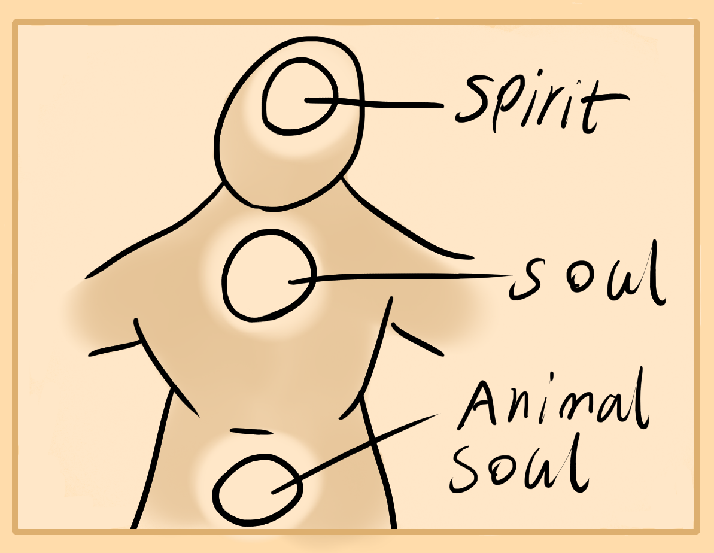

If you cut a body in half you will see the flesh and muscle section along with the organ area in the middle. Center training aids the middle or inner region while outer training aids the external.
Physical exercise is more likely to train your external areas unless it's more slow and meditative exercises. Though, this chapter is on meditation for the outer area.
External Meditation
Sit and relax, close your eyes. Start by feeling the inner energies that your organ centers have, feel your guts, heart region and head. Notice the pressures, temperatures, sensations, and movements that are going on inside of there. Then expand your focus out a little to the functional parts of your body. The outer parts. These are functional because in normal life you use your eyes instead of inner center, or arms instead of heart area. Usually, unless you're a magician. Sit and hold your focus on this external, muscular, limb and fleshy area.
If you do this correctly you should start to feel more "real". By this I mean the part of you, your body which interacts with reality is becoming more and more dense, real, material. Your eye sight should clarify, hearing become more refined, sense of touch, arm ability, strength and legs should all feel better.
Notes
So from this meditation we can see that the internal spiritual centers are what you may think of as your "Animal Soul" "Soul" and "Spirit". These are the immortal parts of you.
